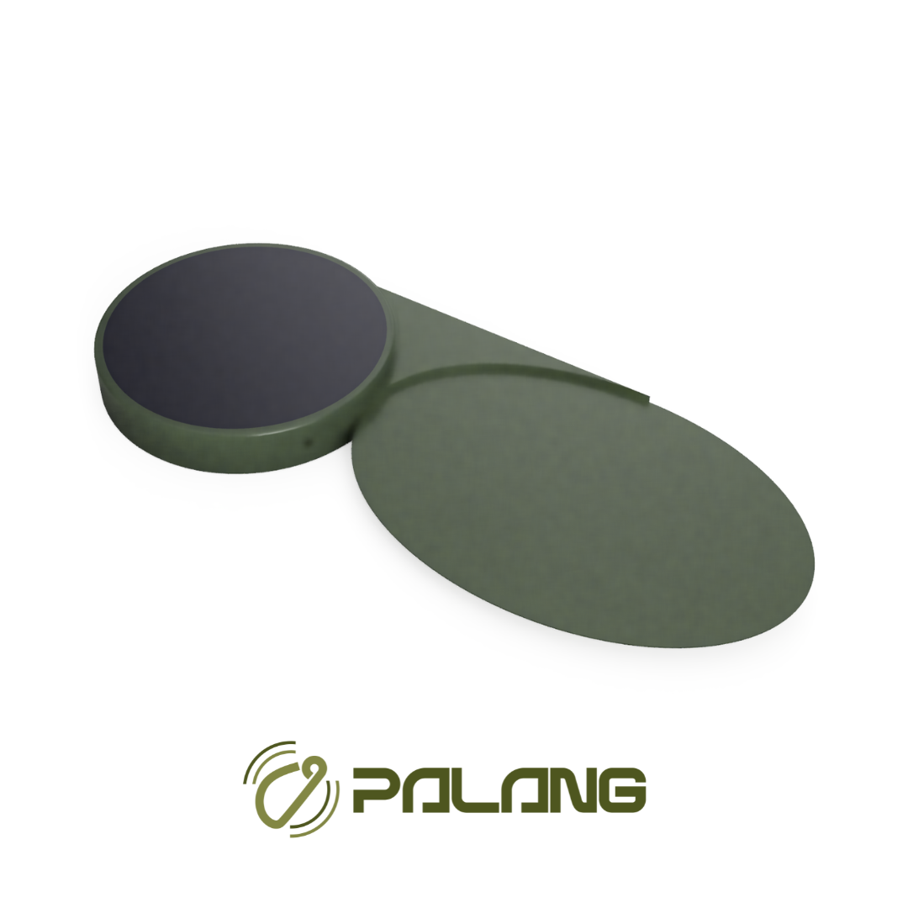

Joonsung Park
Hardware & Firmware Lead
- PCB, firmware, Enclosure CAD
- GENIUS Olympiad Gold Medalist
Maple-Seed–Inspired Sensors for Earliest Wildfire Detection
PALANG deploys ultra-lightweight sensors by drone to enable early wildfire detection in remote and hazardous terrain. Inspired by the autorotational flight of maple seeds, each sensor lands stably and operates autonomously through solar energy harvesting, without manual installation. Using a dual-path detection architecture, PALANG identifies flaming fires through infrared flicker analysis and smoldering ignition through optical changes cross-validated by gas and VOC signals. Alerts are transmitted in real time to a cloud platform that estimates ignition location, probability, and potential spread, enabling faster, targeted response before fires expand.
Watch a Short Demo
Our work is grounded in innovation, collaboration, and a shared commitment to protecting communities and ecosystems.
To detect wildfires at early ignition stages within seconds and deliver actionable intelligence through scalable, affordable technology that reduces loss severity and enables rapid response.
A world where wildfires are detected early, predicted accurately, and managed effectively—preventing small ignitions from becoming catastrophic events.
PALANG was founded at Korea Minjok Leadership Academy (KMLA) in
Gangwon, a region frequently affected by wildfires. In 2024,
repeated wildfire incidents in nearby areas prompted our team to
begin researching early detection systems. That commitment deepened
in April 2025, when the Inje wildfire triggered emergency alerts
across our campus—highlighting how quickly conditions can escalate.
The experience reinforced the need for technology designed for
real-world terrain, unpredictable weather, and rapid response.
PALANG was built to meet that need.
PALANG enables ultra-fast, low-cost wildfire detection at scale.
Hardware Price
Detection Speed
False Alarm Rate
Detection Success Rate
Our integrated approach combines cutting-edge technology with nature's wisdom.
Maple-seed-inspired enclosures enable stable aerial deployment without manual installation.
Flaming and smoldering ignition are detected through separate, physics-based sensing pathways.
Low-power LoRaWAN links connect sensors to gateways over long distances.
Solar harvesting enables continuous, battery-free operation with ultra-low power use.
Sensor alerts are authenticated, localized, and displayed on a real-time map.
Cloud models estimate ignition risk, location, and potential spread.
A multidisciplinary team combining hardware innovation, web development, and economic strategy to bring PALANG to life.
Hardware & Firmware Lead
- PCB, firmware, Enclosure CAD
- GENIUS Olympiad Gold Medalist
Web & Cloud Lead
- Cloud pipeline & map-based UI
- Built KMLA online platforms
Business Lead
- Strategy & Partnerships
- International Economics Olympiad Silver Medalist
A quick overview of how PALANG detects, predicts, and enables rapid response.